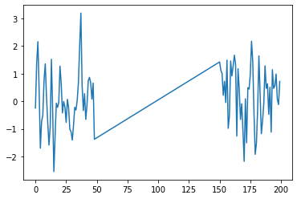

import rpy2
import rpy2.robjects as ro
from rpy2.robjects.vectors import FloatVector
from rpy2.robjects.packages import importr
import torch
import numpy as np
from tqdm import tqdm
import torch.nn.functional as F
from torch_geometric_temporal.nn.recurrent import GConvGRU
import matplotlib.pyplot as pltOur method
import
class RecurrentGCN(torch.nn.Module):
def __init__(self, node_features, filters):
super(RecurrentGCN, self).__init__()
self.recurrent = GConvGRU(node_features, filters, 2)
self.linear = torch.nn.Linear(filters, 1)
def forward(self, x, edge_index, edge_weight):
h = self.recurrent(x, edge_index, edge_weight)
h = F.relu(h)
h = self.linear(h)
return hR
%load_ext rpy2.ipython%%R
library(GNAR)
library(igraph)EbayesThresh
%%R
library(EbayesThresh)
set.seed(1)
epsilon = rnorm(1000)
signal = sample(c(runif(25,-2,-1.5), runif(25,1.5,2), rep(0,950)))
index_of_trueoutlier = which(signal!=0)
x_ebayes=signal+epsilon%R -o x_ebayes
%R -o index_of_trueoutlier
%R -o signalebayesthresh = importr('EbayesThresh').ebayesthreshoutlier_true_index = index_of_trueoutlieroutlier_true_value = x_ebayes[index_of_trueoutlier]outlier_true_one = signal.copy()outlier_true_one = list(map(lambda x: -1 if x!=0 else 1,outlier_true_one))데이터 가정
데이터가정: missing (결측값) 이 있는 자료를 가정
- missing이 있는상태: ST-GCN 을 사용할 수 X \(\to\) 코드에 에러는 나지 않지만 yhat이 산출되지 않았습니다.
- missing이 없어야만: ST-GCN 을 사용할 수 O
증명
%%R
summary(fiveNet)GNARnet with 5 nodes and 10 edges
of equal length 1%%R
edges <- as.matrix(fiveNet)
data("fiveNode")%R -o fiveVTS
%R -o edges- node: 5
- time 200
edges_tensor = torch.tensor(edges)nonzero_indices = edges_tensor.nonzero()fiveNet_edge = np.array(nonzero_indices).T데이터 일부 missing 처리
%%R
fiveVTS0 <- fiveVTS
fiveVTS0[50:150, 3] <- NA%R -o fiveVTS0plt.plot(fiveVTS0[:,2])
fiveVTS0.shape(200, 5)T = 200
N = 5 # number of Nodes
E = fiveNet_edge
V = np.array([1,2,3,4,5])
t = np.arange(0,T)
node_features = 1f = torch.tensor(fiveVTS0).reshape(200,5,1).float()X = f[:199,:,:]
y = f[1:,:,:]edge_index = torch.tensor(E)
edge_attr = torch.tensor(np.array([1,1,1,1,1,1,1,1,1,1]),dtype=torch.float32)_ee = enumerate(zip(X,y))model = RecurrentGCN(node_features=1, filters=4)
optimizer = torch.optim.Adam(model.parameters(), lr=0.01)
model.train()
for epoch in tqdm(range(50)):
for time, (xt,yt) in enumerate(zip(X,y)):
y_hat = model(xt, edge_index, edge_attr)
cost = torch.mean((y_hat-yt)**2)
cost.backward()
optimizer.step()
optimizer.zero_grad()100%|██████████| 50/50 [00:33<00:00, 1.50it/s]yhat = torch.stack([model(xt, edge_index, edge_attr) for xt in X]).detach().numpy()yhat.shape(199, 5, 1)Result
plt.plot(yhat[:,2].data)
1. missing을 채움. (mean, linear interpolation)
1.1. Mean
fiveVTS0_mean = fiveVTS0.copy()fiveVTS0_mean[49:150,2] = np.mean(fiveVTS0[:49,2].tolist()+fiveVTS0[150:,2].tolist())plt.plot(fiveVTS0_mean[:,2])
1.2. linear interpolation
# Define the two data points
x0, y0 = torch.tensor([48.0]), torch.tensor(fiveVTS0[48,2])
x1, y1 = torch.tensor([150.0]), torch.tensor(fiveVTS0[150,2])
# Define the target x value
x = torch.tensor([range(49,150)])
# Find the slope of the line between the two data points
m = (y1 - y0) / (x1 - x0)
# Use the slope and the coordinates of one of the data points to find the y-intercept
b = y0 - m * x0
# Use the slope and y-intercept to calculate the target y value
y = m * x + b
print(y)
y.shapetensor([[-1.3480, -1.3206, -1.2931, -1.2657, -1.2382, -1.2108, -1.1833, -1.1558,
-1.1284, -1.1009, -1.0735, -1.0460, -1.0186, -0.9911, -0.9636, -0.9362,
-0.9087, -0.8813, -0.8538, -0.8264, -0.7989, -0.7714, -0.7440, -0.7165,
-0.6891, -0.6616, -0.6342, -0.6067, -0.5792, -0.5518, -0.5243, -0.4969,
-0.4694, -0.4420, -0.4145, -0.3871, -0.3596, -0.3321, -0.3047, -0.2772,
-0.2498, -0.2223, -0.1949, -0.1674, -0.1399, -0.1125, -0.0850, -0.0576,
-0.0301, -0.0027, 0.0248, 0.0523, 0.0797, 0.1072, 0.1346, 0.1621,
0.1895, 0.2170, 0.2445, 0.2719, 0.2994, 0.3268, 0.3543, 0.3817,
0.4092, 0.4367, 0.4641, 0.4916, 0.5190, 0.5465, 0.5739, 0.6014,
0.6289, 0.6563, 0.6838, 0.7112, 0.7387, 0.7661, 0.7936, 0.8211,
0.8485, 0.8760, 0.9034, 0.9309, 0.9583, 0.9858, 1.0133, 1.0407,
1.0682, 1.0956, 1.1231, 1.1505, 1.1780, 1.2055, 1.2329, 1.2604,
1.2878, 1.3153, 1.3427, 1.3702, 1.3977]])torch.Size([1, 101])fiveVTS0_linearinterpolation = fiveVTS0.copy()fiveVTS0_linearinterpolation[49:150,2] = yplt.plot(fiveVTS0_linearinterpolation[:,2])
2. ST-GCN 을 사용하여 fhat을 구함. (스무딩1)
T = 200
N = 5 # number of Nodes
E = fiveNet_edge
V = np.array([1,2,3,4,5])
t = np.arange(0,T)
node_features = 1edge_index = torch.tensor(E)
edge_attr = torch.tensor(np.array([1,1,1,1,1,1,1,1,1,1]),dtype=torch.float32)2.1. Mean
f_mean = torch.tensor(fiveVTS0_mean).reshape(200,5,1).float()X_mean = f_mean[:199,:,:]
y_mean = f_mean[1:,:,:]model = RecurrentGCN(node_features=1, filters=4)
optimizer = torch.optim.Adam(model.parameters(), lr=0.01)
model.train()
for epoch in tqdm(range(50)):
for time, (xt,yt) in enumerate(zip(X_mean,y_mean)):
y_hat = model(xt, edge_index, edge_attr)
cost = torch.mean((y_hat-yt)**2)
cost.backward()
optimizer.step()
optimizer.zero_grad()100%|██████████| 50/50 [00:33<00:00, 1.49it/s]fhat_mean = torch.stack([model(xt, edge_index, edge_attr) for xt in X_mean]).detach().numpy()fhat_mean.shape(199, 5, 1)Result
plt.plot(fhat_mean[:,2].data)
2.2. linear interpolation
f_linearinterpolation = torch.tensor(fiveVTS0_linearinterpolation).reshape(200,5,1).float()X_linearinterpolation = f_mean[:199,:,:]
y_linearinterpolation = f_mean[1:,:,:]model = RecurrentGCN(node_features=1, filters=4)
optimizer = torch.optim.Adam(model.parameters(), lr=0.01)
model.train()
for epoch in tqdm(range(50)):
for time, (xt,yt) in enumerate(zip(X_linearinterpolation,y_linearinterpolation)):
y_hat = model(xt, edge_index, edge_attr)
cost = torch.mean((y_hat-yt)**2)
cost.backward()
optimizer.step()
optimizer.zero_grad()100%|██████████| 50/50 [00:33<00:00, 1.48it/s]fhat_linearinterpolation = torch.stack([model(xt, edge_index, edge_attr) for xt in X_linearinterpolation]).detach().numpy()fhat_linearinterpolation.shape(199, 5, 1)Result
plt.plot(fhat_linearinterpolation[:,2].data)
3. 2에서 얻은 fhat을 이용하여 그래프퓨리에변환+Ebayesthresh (스무딩2)
- 그래프퓨리에변환을 하는 가중치
- 년도끼리 이어주어서 하나의 큰 그래프로 만든뒤에 GFT
- Ebayesthresh